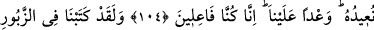
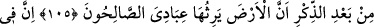
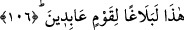
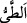
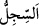

YERYÜZÜNE
İYİ KULLARIM
VÂRİS OLACAKTIR
104. (Düşün o) günü ki, yazılı kâğıtların tomarını dürer gibi göğü toplayıp
düreriz. Tıpkı ilk yaratmaya başladığımız gibi onu tekrar o hale getiririz. (Bu,)
üzerimize aldığımız bir vaad oldu. Biz, (vâdettiğimizi) yaparız.
105. Andolsun Zikir’den sonra Zebur’da da: “Yeryüzüne iyi kullarım vâris
olacaktır” diye yazmıştık.
106. İşte bunda, (bize) kulluk eden bir kavim için bir mesaj vardır.
Düşün o “günü ki, yazılı kâğıtların tomarını dürer gibi göğü toplayıp düreriz.” “__WORD__ yaymanın zıddı olan dürmek/katlamak demektir. “__WORD__ ise sayfa demektir.
İmam Süheylî (r.h.) şöyle demiştir: “Bana, Muhammed b. Hasan Mukrî bir gurup
müfessirden naklen şöyle dedi: “es-Sicill” üçüncü kat semada bulunan bir meleğin
adıdır. Kulların amellerini kaydetmekle görevli olan hafaza melekleri, yazdıklarını
pazartesi ve perşembe günleri ona arz ederler. Zikredildiğine göre Hârût ve Mârût da
onun yardımcılarındandı. Ebû Dâvud’un Sünen’inde “es-Sicill, Nebî (a.s.)’ın
kâtiblerindendi.”[219] der Ancak bu haber dışında ne Hz. Peygamberin kâtipleri içinde
ne de ashâb-ı kirâm arasında Sicil adında birisi tanınmamaktadır.”
İnsânü’l-uyûn’da şöyle der: “Kur’anda Rasûlullah (s.a.)’in evlatlığı Zeyd b.
Hârise’den başka ashabdan hiçbir erkeğin adı anılmamıştır. Nitekim kadınlardan da
sâdece Hz. Meryem’in ismi zikredilmiştir.”
İbnü’l-Cevzî şöyle der: “Ancak bazı tefsirlerde bu âyette geçen “es-Sicill”in
Rasûlullah (s.a.) için kâtiblik yapan bir adamın ismi olduğu rivâyet edilir.”
el-Kâmûs’ta ise: “es-Sicill” Nebî (a.s.)’ın bir kâtibinin ve bir meleğin adıdır.” der.
“Tıpkı ilk yaratmaya başladığımız gibi onu tekrar o hâle getiririz.” Yâni, onu
yokluktan sonra îcâd edip yarattığımız gibi tekrar iâde eder, yaratırız. Bu insanın
acbü’z-zenebden/kuyruk sokumundan tekrar yaratılmasına ters düşmez.”
Bahru’l-ulûm’da şöyle der: “Yâni yarattıklarımızı ilk hallerine iâde ederiz. Burada,